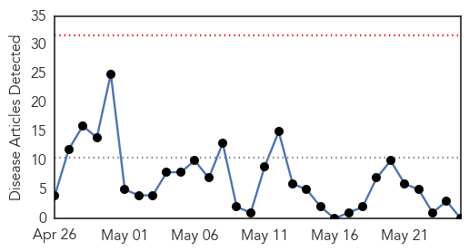
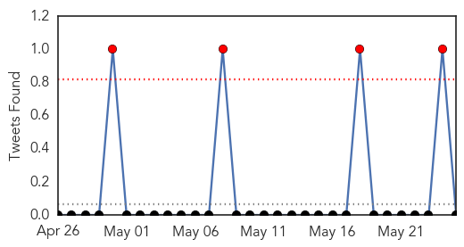
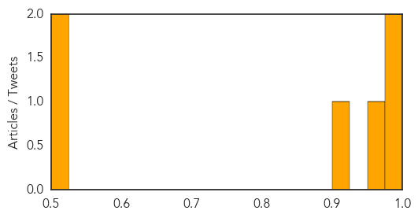

Measles
30-Day Web Trend
0 alerts, 0 warnings

30-Day Twitter Trend
0 alerts, 0 warnings

Article Locations

Article Confidences

Top Articles:
-
No articles found for May 25, 2015
Top Tweets:
-
No tweets found for May 25, 2015
Influenza
30-Day Web Trend
0 alerts, 0 warnings
30-Day Twitter Trend
0 alerts, 0 warnings

Article Locations
Article Confidences
Top Articles:
- 0.991
- Vaccines Developed for H5N1, H7N9 Avian Influenza Strains
- 0.985
- Flu cases double in South Australia as the elderly face an early spike
- 0.965
- North Platte Nebraska's favorite newspaper
- 0.913
- Canine influenza outbreak catches attention of Steamboat veterinarians
- 0.521
- TN to Continue Ban on Poultry From Kerala
- 0.514
- Centre Silent, TN to Continue Ban on Kerala Poultry
Top Tweets:
-
No tweets found for May 25, 2015